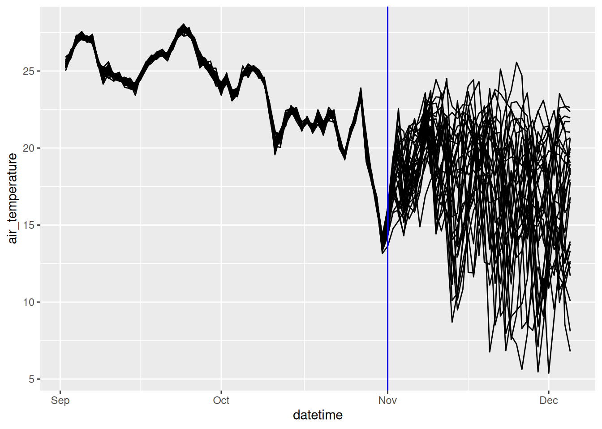
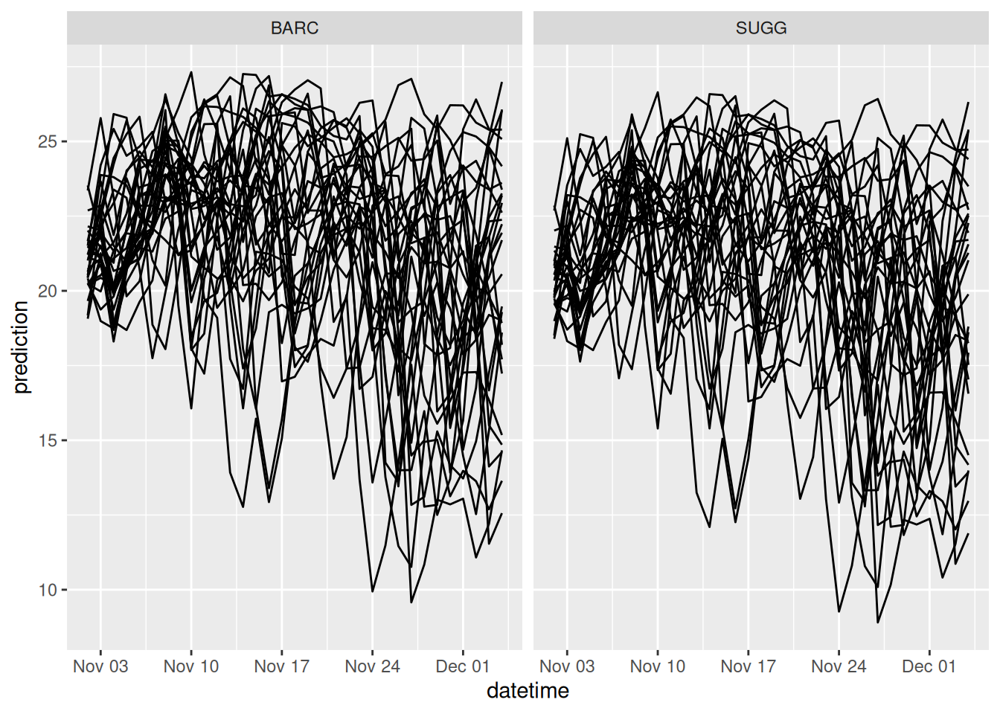
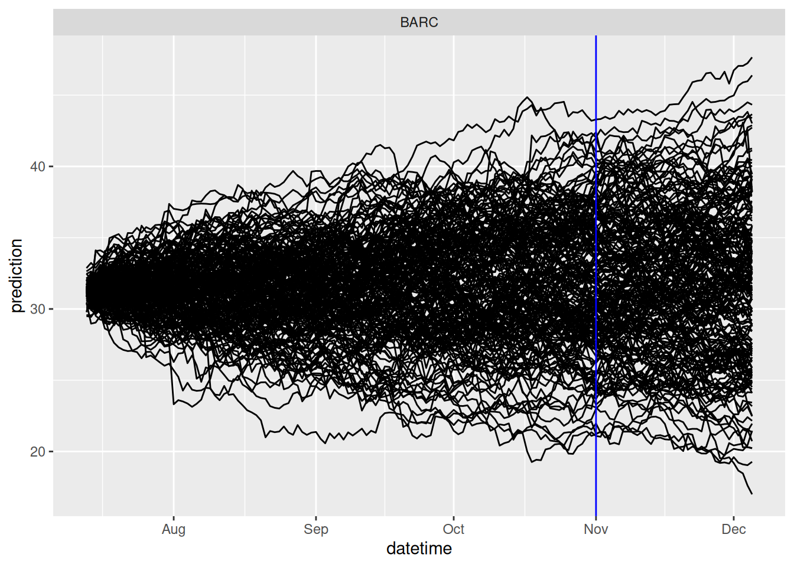

library(tidyverse)
library(lubridate)12 Build your own forecast
The project challenges you to build a new model that forecasts NEON water temperature using the foundations that have been taught thus far in the book. You will be automatically submitting forecasts to the NEON Ecological Forecasting Challenge.
Here is information about generating and submitting forecasts: https://projects.ecoforecast.org/neon4cast-ci/
You are welcome to use any modeling or statistical framework. I provide some great resources for R packages that open the doors to many modeling frameworks below but you are not required to use them.
Expectations for project
- Code in a GitHub repository that generates a forecast that uses a model that is “substantially” different from the linear model that we developed together. “Substantially” means you used a different modeling approach or a linear model with different variables. In the latter, you need to justify why you chose those parameters and why you think it is a better model than the one we developed together. Merely adding one more covariate because it is easy to do does not represent a “substantially” different model.
- The code in #1 generates real-time forecasts that include uncertainty.
- The forecast model is registered with the NEON Ecological Forecasting Challenge. Information for registering your model and submitting it can be found here.
- Automated forecasts are generated using GitHub actions
12.1 Helpful tips
You may want to use lags in your model. Lags in the target variables are used in autoregressive models. Lags in the inputs may improve your predictions because past weather may be a better predictor than current weather. Considerations for working with lags are below.
12.1.1 Lags in targets
One issue to consider when working with auto-regression (lagged) models is that data may not be available on the date you start your forecast (e.g., today). In this case, the forecast needs to start at the most recent observation and run to the present day. The model is continued on into the future over the full horizon. Only the future datetimes are submitted as a true forecast. Effectively, The output of the model run to the present day is the starting point for the true forecast into the future.
12.1.2 Lags in inputs
You may want to use linear modeling (like lm) but add more covariates. If you want to explore the use of lag or running sums in the weather inputs, you will need to combine the historical and future weather data tomorrow (otherwise you won’t have a value for the lagged variable on the first day of the first). Here is some code to create a combined weather dataset.
noaa_forecast_start <- Sys.Date() - days(1)
min_historical_day <- Sys.Date() - days(60)
variables <- "air_temperature"
sites <- "BARC"
noaa_past_mean <- neon4cast::noaa_stage3() |>
filter(site_id %in% sites,
variable %in% variables,
datetime > min_historical_day,
datetime < noaa_forecast_start) |>
collect() |>
mutate(datetime = as_date(datetime)) |>
summarize(prediction = mean(prediction), .by = c("datetime", "site_id", "parameter", "variable")) |>
pivot_wider(names_from = variable, values_from = prediction) |>
mutate(air_temperature = air_temperature - 273.15)
noaa_future_mean <- neon4cast::noaa_stage2(start_date = noaa_forecast_start) |>
filter(datetime >= noaa_forecast_start,
site_id %in% sites,
variable %in% variables) |>
collect() |>
mutate(datetime = as_date(datetime)) |>
summarize(prediction = mean(prediction), .by = c("datetime", "site_id", "parameter", "variable")) |>
pivot_wider(names_from = variable, values_from = prediction) |>
mutate(air_temperature = air_temperature - 273.15) |>
select(datetime, site_id, air_temperature, parameter)
combined_met_df <- bind_rows(noaa_past_mean, noaa_future_mean)ggplot(combined_met_df, aes(x = datetime, y = air_temperature, group = parameter)) +
geom_line() +
geom_vline(aes(xintercept = Sys.Date()), color = "blue")
Remember that the lag needs to be calculated within an ensemble member.
12.1.3 Reforecasting
A good way to evaluate your forecast model is to generate forecasts for a starting date (e.g., reference_datetime) in the past. These “reforecasts” or “retroactive forecasts” use NOAA forecasts as inputs (or other forecasts) just like they are real-time forecasts so they mimic a genuine forecast of the future. Importantly, you should only use target data before the reforecast start date to train your forecast model. The key difference is that you can immediately compare the results to observations.
12.2 Intro to Tidymodels
Tidmodels is a meta-package that provides a standardized interface with many machine-learning algorithms. This brief tutorial that provides an example application with tidymodels builds on the machine learning module in the FREC 3044: Environmental Data Science course at Virginia Tech. https://github.com/frec-3044/machine-learning-template.
Tidymodels does not estimate uncertainty so forecast uncertainty needs to be generated output the tidymodels framework. For example, driver uncertainty can be generated by creating tidymodel forecasts for each meteorological ensemble member.
12.2.1 Overview of tidymodels steps
Step 1: Obtain data
Read in data to memory. In the course, we have accessed CSV, excel, and database forms located in the GitHub repo, on websites, and through an API.
Step 2: Pre-process data
Split data: divide data into the training and test sets.
- You will use the training set to fit your model and the testing set to evaluate the model performance.
- We only want to evaluate our model using data that the model has not used yet. Otherwise, we can only say that the model is good at fitting the data that was used to train it. This does not help us understand how it would perform as a tool to generate new predictions.
- You want most of your data in the training set because machine learning models can be quite “hungry for data”.
- A typical split is 80% training and 20% testing but there isn’t a required split.
- Data are randomly assigned to the two splits.
- Your data may have obvious groupings that you want to be equally represented in both the training and testing sets. For example, if you have cats and dogs as a variable you are using to predict tail length, you may want to be sure that your training set is not randomly full of dogs because that means it may not predict the cats well in the testing set. You can prevent this by defining the
strataused when assigning the training and testing sets.
Recipes: Modify predictors/features/covariates/independent variables for analysis
- Modify the data set so that variables are correctly formatted for a particular model. For example, a linear regression requires groups to be dummy variables. Therefore, a column called “ecosystem” with two values: “forest” and “grass” would be converted to two columns: ecosystem_forest with a value of 0 or 1 and ecosystem_grass with a value of 0 and 1)
- Removing highly correlated predictors
- Rescaling predictor (e.g., converting to 0 mean and 1 standard deviation)
- transforming predictors (e.g., log)
Step 3: Specify model and workflow
A workflow combines the model and recipe in a single “object” that you can use for training, testing, and predicting new data.
- Define model type: linear regression, regression tree, neutral net, etc.
- Define model engine: particular R package (
lm,ranger, etc.) - Define model mode: regression or classification
- Define workflow: combine recipe and model definition
Step 4: Train model
Tune hyper-parameters: hyper-parameters are configuration settings that govern how a particular ML method is fit to data. They are called “hyper” because “regular” parameters are the parameters within the model that are learned by the ML method. For example, a method called “random forecast” requires a hyper-parameter that controls the minimum size of a regression tree that is allowed. This parameter (called
min_n) could be directly provided by you or could be tuned. The tuning process involves repeatedly fitting the model using different values of the hyper-parameter and using the hyper-parameter values that yield the best fit to the data. Importantly: not all ML methods have hyper-parameters (e.g., linear regression using thelmengine does not have hyper-parameters). We don’t tune hyperparameters in this example. Seeexample-with-tuning.Rmdfor an extension of this application that includes hyperparameter tuning.Fit model (using best hyper-parameter if they are tuned). The model is fit to the training data.
Step 5: Predict
- Predict testing data using the model that was fit to the training data. This step is critical because we only want to evaluate our model using data that the model has not used yet. Otherwise, we can only say that the model is good at fitting the data that was used to train it. This does not help understand how it would perform as a tool to generate new predictions.
- Predictions are quite easy using the
predict()function.
Step 6: Evaluate model
- It is important to use the appropriate metrics to evaluate how the model performs. Some metrics only apply to classification problems and others only apply to regression problems. A list of metric types can be found here
- We will be focusing on root-mean-squared error (
rmse), a metric that subtracts each observation from the predictions, squares it, averages all the squared errors for all the data points, and then takes the square root of the mean squared error.
- R-squared (
rsq) is another metric that we used in the lake ice module.
Step 7: Deploy model
- One of the main points of using machine learning is to develop a tool that can be used with new predictors to predict data that wasn’t involved in the training and testing. These are data that have all the columns necessary to make predictions but lack data in the column you are trying to predict.
- This step is simple because it involves using the
predict()function with the same trained model but with new data.
12.2.2 Application: Predicting water temperature at NEON sites
library(tidymodels)
tidymodels_prefer()
set.seed(100) #for random number generation12.2.2.1 Step 1: Obtain data
lake_sites <- c("BARC", "SUGG")targets <- read_csv('https://data.ecoforecast.org/neon4cast-targets/aquatics/aquatics-targets.csv.gz',
show_col_types = FALSE) |>
filter(site_id %in% lake_sites)targets <- targets |>
filter(site_id %in% lake_sites,
variable == "temperature")# past stacked weather
df_past <- neon4cast::noaa_stage3()
variables <- c("air_temperature")
noaa_past <- df_past |>
dplyr::filter(site_id %in% lake_sites,
datetime >= ymd('2017-01-01'),
variable %in% variables) |>
dplyr::collect()# aggregate the past to mean values
noaa_past_mean <- noaa_past |>
mutate(datetime = as_date(datetime)) |>
group_by(datetime, site_id, variable) |>
summarize(prediction = mean(prediction, na.rm = TRUE), .groups = "drop") |>
pivot_wider(names_from = variable, values_from = prediction) |>
# convert air temp to C
mutate(air_temperature = air_temperature - 273.15)forecast_date <- Sys.Date()
noaa_date <- forecast_date - lubridate::days(2)
df_future <- neon4cast::noaa_stage2(start_date = noaa_date)
variables <- c("air_temperature")
noaa_future <- df_future |>
dplyr::filter(reference_datetime == noaa_date,
datetime >= forecast_date,
site_id %in% lake_sites,
variable %in% variables) |>
dplyr::collect()noaa_future_daily <- noaa_future |>
mutate(datetime = as_date(datetime)) |>
# mean daily forecasts at each site per ensemble
summarize(prediction = mean(prediction), .by = c("datetime", "site_id", "parameter", "variable")) |>
pivot_wider(names_from = variable, values_from = prediction) |>
# convert to Celsius
mutate(air_temperature = air_temperature - 273.15) |>
select(datetime, site_id, air_temperature, parameter)targets_df <- targets |>
filter(variable == 'temperature') |>
pivot_wider(names_from = 'variable', values_from = 'observation') |>
left_join(noaa_past_mean,
by = c("datetime","site_id")) |>
mutate(doy = yday(datetime))12.2.2.2 Step 2: Pre-process data
Split data into training/testing sets
We are going to split the data into training and testing sets using the initial_split function. prop = 0.80 says to use 80% of the data in the training set.
split <- initial_split(targets_df, prop = 0.80, strata = site_id)Our split should reflect the 80/20 that we defined using prop
split<Training/Testing/Total>
<4189/1048/5237>To get the training and testing data we need to apply the training() and testing() functions to the split.
train_data <- training(split)
test_data <- testing(split)You can see that train_data is a data frame that we can work with.
train_data# A tibble: 4,189 × 5
datetime site_id temperature air_temperature doy
<date> <chr> <dbl> <dbl> <dbl>
1 2017-08-27 BARC 31.5 NA 239
2 2017-08-28 BARC 31.1 NA 240
3 2017-08-29 BARC 31.1 NA 241
4 2017-08-30 BARC 31.4 NA 242
5 2017-08-31 BARC 31.7 NA 243
6 2017-09-01 BARC 31.6 NA 244
7 2017-09-02 BARC 31.1 NA 245
8 2017-09-03 BARC 31.1 NA 246
9 2017-09-06 BARC 30.8 NA 249
10 2017-09-07 BARC 30.5 NA 250
# ℹ 4,179 more rowsFeature engineering using a recipe
- requires starting with dataset that is used to provide the columns.
- a formula with the dependent variable and the predictors. If
.is used as the predictor, that means using all columns other than the dependent variable. - Steps that modify the data
We will use the following steps:
step_rmbecause we don’t want to use the datetime in the fit.step_naomitbecause there are na values in the temperature and air_temperature columns. This is used here for illustrative purposes and can also be done by filtering the target data before it is split into training and testing groups
Here are the different recipe steps used above
Here is our recipe:
our_recipe <- train_data |>
recipe(temperature ~ . ) |>
step_rm(datetime) |>
step_naomit(air_temperature, temperature)The recipe should show the steps that will be performed when applying the recipe. Importantly, these steps have not yet been applied, we just have a recipe of what to do.
our_recipe── Recipe ──────────────────────────────────────────────────────────────────────── Inputs Number of variables by roleoutcome: 1
predictor: 4── Operations • Variables removed: datetime• Removing rows with NA values in: air_temperature temperatureStep 3: Specify model, engine, and workflow
We need to create the model and engine that we will use. In this example, we are using linear_reg with the mode of regression (as opposed to classification). Setting the mode for a linear regression is not necessary because it only allows regressions but it is included here for completeness.
The engine is lm because we are using the standard R function lm. There are a ton of other functions for linear regression modeling that we could use. They would be specified as a different engine.
our_model <- linear_reg(mode = "regression") |>
set_engine("lm")You will see the model, mode, and engine in the model object
our_model Linear Regression Model Specification (regression)
Computational engine: lm We now combine the model and the recipe to make a workflow that can be used to fit the training and testing data. workflow() initiates the workflow and add_model and add_recipe add those components to the workflow. Importantly, the workflow has not yet been applied, we just have a description of what to do.
wflow <-
workflow() |>
add_model(our_model) |>
add_recipe(our_recipe)You can see that the workflow object has all the components together
wflow══ Workflow ════════════════════════════════════════════════════════════════════
Preprocessor: Recipe
Model: linear_reg()
── Preprocessor ────────────────────────────────────────────────────────────────
2 Recipe Steps
• step_rm()
• step_naomit()
── Model ───────────────────────────────────────────────────────────────────────
Linear Regression Model Specification (regression)
Computational engine: lm Step 4: Train model on Training Data
We will use the workflow object to train the model. We need to provide the workflow object and the dataset to the fit function to fit (i.e., train the model)
fit <- wflow |>
fit(data = train_data)You can see that the fit object is the workflow object + the results of the model fitting
fit══ Workflow [trained] ══════════════════════════════════════════════════════════
Preprocessor: Recipe
Model: linear_reg()
── Preprocessor ────────────────────────────────────────────────────────────────
2 Recipe Steps
• step_rm()
• step_naomit()
── Model ───────────────────────────────────────────────────────────────────────
Call:
stats::lm(formula = ..y ~ ., data = data)
Coefficients:
(Intercept) site_idSUGG air_temperature doy
5.108053 -0.725307 0.875235 0.002883 Step 5: Predict Test Data
Now we will predict the testing data using the model that was fit to the training data.
predictions <- predict(fit, new_data = test_data)The predictions are a single column called .pred
predictions# A tibble: 1,048 × 1
.pred
<dbl>
1 NA
2 NA
3 NA
4 NA
5 NA
6 NA
7 NA
8 NA
9 NA
10 NA
# ℹ 1,038 more rowsWe need to combine the .pred column with the testing data using the bind_cols function
pred_test <- bind_cols(test_data, predictions)Now we have a data frame with the prediction and all the predictors used to predict it.
pred_test# A tibble: 1,048 × 6
datetime site_id temperature air_temperature doy .pred
<date> <chr> <dbl> <dbl> <dbl> <dbl>
1 2017-09-04 BARC 31.4 NA 247 NA
2 2017-09-05 BARC 31.0 NA 248 NA
3 2017-09-14 BARC 28.5 NA 257 NA
4 2017-09-15 BARC 29.3 NA 258 NA
5 2017-09-19 BARC 28.8 NA 262 NA
6 2017-09-22 BARC 29.0 NA 265 NA
7 2017-09-29 BARC 30.1 NA 272 NA
8 2017-10-04 BARC 27.6 NA 277 NA
9 2017-10-06 BARC 27.6 NA 279 NA
10 2017-10-11 BARC 29.6 NA 284 NA
# ℹ 1,038 more rowsStep 6: Evaluate model
We will evaluate the performance of our predictions of the testing data using two metrics (rmse and rsq). The function metric_set defines the set of metrics we will be using them. It creates a function called multi_metric() that we will use to calculate the metrics. We pipe in the predicted test data (pred_test) and tell the function that our truth (i.e., observed data) is the temperature column and the predictions (i.e., estimate) is the .pred column
multi_metric <- metric_set(rmse, rsq)
metric_table <- pred_test |>
multi_metric(truth = temperature, estimate = .pred)The resulting table has the metrics for evaluation
metric_table# A tibble: 2 × 3
.metric .estimator .estimate
<chr> <chr> <dbl>
1 rmse standard 2.42
2 rsq standard 0.819Step 7: Deploy model
The final step is to apply your model to predict new data.
Now read in the new data.
targets_future <- noaa_future_daily |>
mutate(temperature = NA,
doy = yday(datetime)) |>
filter(parameter == 1) |>
select(-parameter)You will notice that the temperature is all NA because you don’t know what the carbon stock is of the plot.
targets_future# A tibble: 68 × 5
datetime site_id air_temperature temperature doy
<date> <chr> <dbl> <lgl> <dbl>
1 2025-03-01 BARC 15.6 NA 60
2 2025-03-02 BARC 16.0 NA 61
3 2025-03-03 BARC 13.6 NA 62
4 2025-03-04 BARC 16.6 NA 63
5 2025-03-05 BARC 21.0 NA 64
6 2025-03-06 BARC 20.3 NA 65
7 2025-03-07 BARC 18.1 NA 66
8 2025-03-08 BARC 19.1 NA 67
9 2025-03-09 BARC 19.8 NA 68
10 2025-03-10 BARC 22.1 NA 69
# ℹ 58 more rowsAs in “Step 5: Predict Test Data”, use the model fitting on the training data (fit) to predict the new data.
new_predictions <- predict(fit, new_data = targets_future)targets_future <- noaa_future_daily |>
mutate(temperature = NA,
doy = yday(datetime))
tidymodels_forecast <- data.frame()
for(i in unique(targets_future$parameter)){
curr_ens <- targets_future |>
filter(parameter == i) |>
select(-parameter)
new_predictions <- predict(fit, new_data = curr_ens)
curr_ens <- bind_cols(curr_ens, new_predictions) |>
mutate(parameter = i)
tidymodels_forecast <- bind_rows(tidymodels_forecast, curr_ens)
}tidymodels_forecasts_EFI <- tidymodels_forecast %>%
rename(prediction = .pred) %>%
mutate(variable = "temperature") |>
# For the EFI challenge we only want the forecast for future
filter(datetime > Sys.Date()) %>%
group_by(site_id, variable) %>%
mutate(reference_datetime = min(datetime) - lubridate::days(1),
family = "ensemble",
model_id = "tidymodels_lm") %>%
select(model_id, datetime, reference_datetime, site_id, family, parameter, variable, prediction)tidymodels_forecasts_EFI |>
filter(variable == "temperature") |>
ggplot(aes(x = datetime, y = prediction, group = parameter)) +
geom_line() +
facet_wrap(~site_id)
12.2.3 Tidymodel extras
12.2.3.1 Changing the model approach
You can easily change the modeling approach by changing the model and engine. For example, the following code replaces the linear regression model with a random forest model from the ranger package. All other code used to fit and predict with the model stays the same.
our_model <- rand_forest(mode = "regression") |>
set_engine("ranger")A list of models that are available for you to use can be found here. Not all models are designed for all applications. For example, forecasting water temperature requires regression models rather than classification models.
12.2.3.2 Tuning hyper-parameters
Some modeling approaches have parameters that govern how the model fitting is done. These are called hyperparameters. Hyperparameters are different from the parameters that are optimized using data in the modeling fitting step. Tidymodels provides tools to also fit hyperparameters. An example can be found here.
12.3 Intro to Fable Models
The Fable modeling framework provides an interface for many common models used in forecasting. The useful thing about Fable is that it is specifically focused on forecasting so uncertainty estimation is a core feature. Fable also has an associated ebook called “Forecasting: Principles and Practice” that is an excellent resource for learning empirical methods in time-series forecasting. Similar to Tidymodels, once you have learned the general structure of how the package works, it opens up many different modeling approaches.
The example below forecasts using a simple random walk. Since the random walk starts at the last observation, it shows how to generate a forecast for variables that have a gap between the last observation and the current day.
library(tsibble)
library(fable)12.3.1 Step 1: Set up targets
targets <- read_csv('https://data.ecoforecast.org/neon4cast-targets/aquatics/aquatics-targets.csv.gz',
show_col_types = FALSE)max_horizon <- 35
var <- "temperature"
site <- "BARC"We want to collect when to start our forecast. If we have observations from today then our forecast starts today. But if there is a gap between our last observation and today, our forecast needs to start on the date of the last observation and forecast until today. Then the forecast needs to extend into the future for our desired horizon. As a result, the horizon that we provide the fable model may be longer than the horizon that we want to forecast into the future. The code below calculates the start date of the forecast and the full horizon (the desired horizon in the future + the gap between the last observation and today)
forecast_starts <- targets |>
dplyr::filter(!is.na(observation) & site_id == site & variable == var) |>
# Start the day after the most recent non-NA value
dplyr::summarise(start_date = max(datetime) + lubridate::days(1)) |> # Date
dplyr::mutate(h = (Sys.Date() - start_date) + max_horizon,
h = as.numeric(h)) |> # Horizon value
dplyr::ungroup()
forecast_starts# A tibble: 1 × 2
start_date h
<date> <dbl>
1 2025-02-18 46The targets have to be converted into a time-series tibble (called a tsibble). To make a tsibble you need to define the grouping variables (key) and the common that defines the time-series (index). Many modeling approaches require the datetime to be continuous (no gaps) but allow na values for values in the gaps. The fill_gaps() function fills the gaps with NAs.
targets_use <- targets |>
dplyr::filter(site_id == site,
variable == var) %>%
tsibble::as_tsibble(key = c('variable', 'site_id'), index = 'datetime') |>
tsibble::fill_gaps() # add NA values up to today (index)Once you have a tsibble, you combine it with a modeling approach to generate a model that is ready to be used. In this case, the model is a random walk (RW) with the target of observation.
RW_model <- targets_use |>
fabletools::model(RW = fable::RW(observation))The model is then used to generate a forecast for h number of time-steps in the future. The uncertainty is calculated using a bootstrap method (bootstrap= T) with 200 ensemble members, e.g. samples (times = 200).
forecast <- RW_model |>
fabletools::generate(h = forecast_starts$h, bootstrap = T, times = 200)The forecast is converted into a standard format
RW_forecasts_EFI <- forecast %>%
rename(parameter = .rep,
prediction = .sim) %>%
# For the EFI challenge we only want the forecast for future
#filter(datetime > Sys.Date()) %>%
group_by(site_id, variable) %>%
mutate(reference_datetime = Sys.Date(),
family = "ensemble",
model_id = "persistenceRW") %>%
select(model_id, datetime, reference_datetime, site_id, family, parameter, variable, prediction)and plotted. The reference_datetime is shown in blue.
RW_forecasts_EFI |>
filter(variable == "temperature") |>
ggplot(aes(x = datetime, y = prediction, group = parameter)) +
geom_line() +
geom_vline(aes(xintercept = reference_datetime), color = "blue") +
facet_wrap(~site_id)
12.3.2 Fable extras
12.3.2.1 Other models
Other models can be added at the step that the targets are combined with the modeling approach. This example is a time-series linear model with a trend and seasonal term.
RW_model <- targets_use |>
fabletools::model(lm = TSLM(observation ~ trend() + season()))A list of the other models are are: https://fable.tidyverts.org/reference/index.html